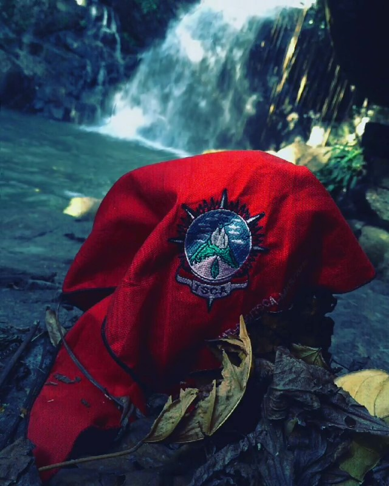

TROPIS SULAWESI CINTA ALAM
CARE ENVIRONMENT FOR LIVE SURVIVAL
Sejarah Berdiri
10 Oktober 1990
TROPIS Sulawesi Cinta Alam resmi berdiri pada tanggal 10 Oktober 1990 . Organisasi ini dibentuk oleh sekelompok pecinta alam dengan visi Upaya pelestarian dan Perlindungan Lingkungan Hidup, serta menggerakkan masyarakat untuk menjaga alam secara berkelanjutan.
Atribut Organisasi
LOGO Awal
Logo Tropis Sulawesi Cinta Alam
LOGO Terbaru
Logo Tropis Sulawesi Cinta Alam.

Slayer
Slayer TSCA